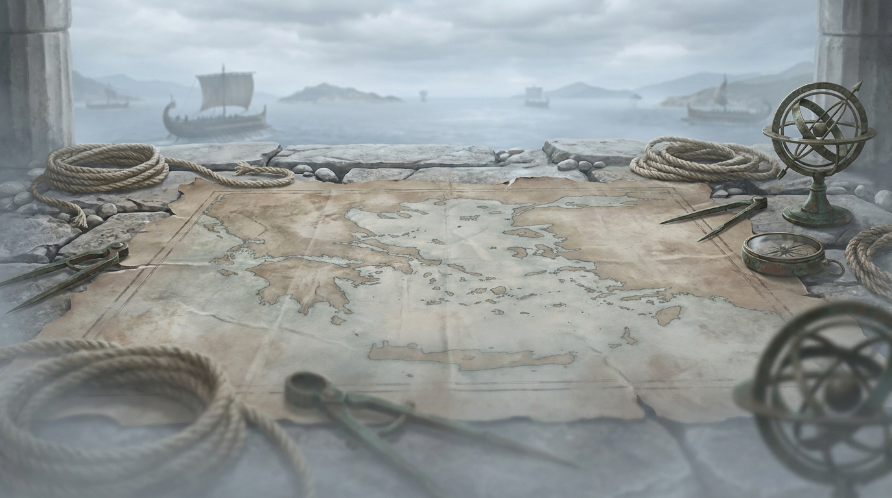

La forme du plateau
Le plateau n’est pas un disque de terre entouré d’eau : c’est un semis d’îles séparées par de la haute mer.
Une île centrale porte les trois quarts des terres. Autour d’elle, deux îles secondaires — trois à partir de onze joueurs — se partagent le reste. Chaque île est séparée des autres par au moins un hexagone de mer, et cette séparation fait tout le jeu : sans elle, la voie maritime serait un raccourci facultatif ; avec elle, c’est le seul chemin.
~ ~ ~ ~ ~ ~ ~ ~
~ ~ ~ ~
~ ( terre sans nom ) ~
~ ~
~ ┌──────────────┐ ~
~ │ │ ~
~ ( terre │ MÉSÉA │ ~
~ sans nom)│ île du milieu│ ~ ~ ~
~ │ ¾ des terres│ ~
~ └──────────────┘ (terre ~
~ sans nom)
~ ~
~ ~ ~ ~
~ ~ ~ ~ ~ ~ ~ ~ ~ ~La mise en place se fait toujours sur l’île centrale. Commencer sur une île secondaire donnerait un point d’exploration gratuit et priverait la partie de la course qui en fait l’intérêt.
Combien de terres
| Joueurs | Terres | Îles secondaires | Déserts | Tuiles d’or |
|---|---|---|---|---|
| 8 à 9 | 44 | 2 | 3 | 2 |
| 10 | 44 | 2 | 3 | 3 |
| 11 | 44 | 3 | 4 | 3 |
| 12 | 48 | 3 | 4 | 3 |
En dessous de huit joueurs, le plateau XXL n’a pas de sens : quarante-quatre hexagones pour quatre personnes dispersent tellement les colonies que chacun ne touche que six tuiles et ne produit presque jamais. Le jeu sert alors le plateau classique de dix-neuf tuiles.
L’archipel est le plateau par défaut. Le
disque — une seule masse de terre, pas de
traversée — donne une soirée nettement plus courte : environ
2 h 20 à douze joueurs, contre 3 h 30 sur l’archipel. L’hôte le
choisit au lancement avec BOARD=disque.
L’hôte peut aussi demander un plateau plus vaste que ne l’appelle son effectif — grand (× 1,6) ou immense (× 2,4), ou un nombre de terres au choix entre 19 et 130. Ce n’est pas un correctif d’équilibrage mais une variante : plus de place à explorer, et une partie plus longue. Le nombre d’îles suit la surface, jusqu’à six — ce sont les rives qui font l’exploration, pas les continents.
Les jetons numérotés
Chaque hexagone de terre productive porte un nombre. C’est lui, et non le terrain, qui décide de votre rythme.
Deux dés sont lancés à chaque cycle. Tous les hexagones portant le total sorti produisent — pour tout le monde, pas seulement pour le joueur actif.
| Nombre | Chances | Ce que ça vaut |
|---|---|---|
| 6 · 8 | 5 / 36 | Très fréquent — la base d’une bonne position |
| 5 · 9 | 4 / 36 | Fréquent |
| 4 · 10 | 3 / 36 | Moyen |
| 3 · 11 | 2 / 36 | Faible |
| 2 · 12 | 1 / 36 | Très rare — mais production double |
| 7 | 6 / 36 | Personne ne produit : l’Errant se réveille |
Dans Grand Colonies, un 2 ou un 12 produit deux ressources par bâtiment au lieu d’une. Une colonie sur un 12 rapporte donc 2 cartes, une cité 4. C’est ce qui rend un emplacement quasiment mort réellement intéressant : rare, mais généreux quand il tombe.
Sur le plateau classique de dix-neuf tuiles, les jetons sont posés en spirale selon la séquence d’origine, ce qui éloigne mécaniquement les 6 des 8. Sur un plateau de cinquante hexagones, cette séquence n’a plus de sens : les jetons y sont tirés au sort par le générateur de la partie. Regardez donc la carte avant de fonder — deux 8 voisins, ça arrive.
La mer, et comment on la franchit
Une voie maritime coûte 1 bois et 1 laine, et compte dans le même réseau que vos routes.
La voie maritime est une route qui longe ou traverse l’eau. Elle se pose exactement comme une route terrestre, sur une arête, en prolongement de votre réseau. Elle compte pour le plus long réseau comme n’importe quel segment, et elle est le seul moyen d’atteindre une autre île.
Prolonge votre réseau sur l’eau. C’est le chemin des terres neuves — et à douze joueurs, les terres neuves sont la seule place qui reste après une heure.
Traverser coûte plusieurs segments et plusieurs cycles. C’est un investissement : pendant que vous naviguez, vos voisins bâtissent. Le pari est qu’ils manqueront de place avant que vous manquiez de bois.
L’exploration majeure
Le premier à fonder sur une île secondaire gagne 1 point. Une seule fois par île, pour toute la partie.
Le point est attribué à la pose de la colonie, pas à l’arrivée de la route : c’est fonder qui compte, pas accoster. Il n’est jamais donné pendant la mise en place, puisque la mise en place a lieu sur l’île centrale.
Avec deux îles secondaires, il y a donc deux points à prendre sur le plateau, trois à onze joueurs et plus. Ce n’est pas énorme au regard des quinze qu’il faut — mais celui qui traverse le premier ne gagne pas seulement le point : il gagne une île entière où personne ne le gêne, pendant que onze personnes se disputent le reste.
Le concept d’origine prévoit des hexagones face cachée qu’on révèle en approchant — ressource rare, village neutre, port, zone dangereuse. Ce système n’existe pas : toutes les tuiles sont visibles dès le début. Seul le point du premier arrivé est en jeu. Voir L’horizon.
Les ports sur la côte
Semés sur des sommets côtiers, espacés, et acquis dès qu’une de vos colonies les touche.
Un port n’a rien à construire ni à payer : il est à vous à l’instant où vous bâtissez sur son sommet. Deux tiers des ports sont spécialisés — ils remisent deux cartes sur une seule ressource — et un tiers sont génériques — une carte sur n’importe laquelle.
S’y ajoutent trois ports en un seul exemplaire par plateau : le port marchand, le port minier et le port commercial. Ce sont des positions de course, comme les métropoles. Ils sont plafonnés au tiers des ports du plateau : sur une côte de six ports, en semer trois ferait un plateau où le commerce ordinaire serait l’exception.
Les ports sont toujours espacés les uns des autres : deux ports adjacents seraient captés par une seule colonie, ce qui donnerait un avantage décisif au premier qui la pose.
Ce que fait chaque port, et pourquoi le port minier vaut soudain très cher quand le marché s’emballe : Commercer.
